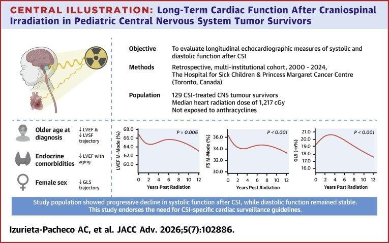
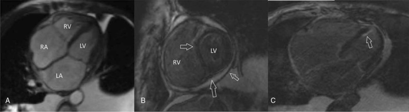
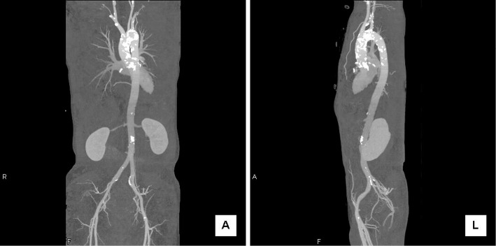

6704 — Bệnh cơ tim do xạ ở người sống sót ung thư nhi: trường chiếu quyết định hình ảnh, liều tim trung bình quyết định theo dõi
Tags: pattern:xo-hoa-co-tim pattern:day-mang-tim pattern:voi-hoa-dong-mach-chu vung:tim vung:trung-that anatomy:co-tim score:ECV score:GLS protocol:MRI-tim protocol:CT-tim protocol:sieu-am-tim
Mức chắc chắn (certainty): tổng hợp y văn (literature synthesis) — ghép tổng quan phân tầng nguy cơ 2025 (Cancers 2025, PMC12691200), 127/129 trẻ sống sót u thần kinh trung ương sau xạ toàn trục não–tủy (JACC Adv 2026, PMC13285839), 117 người sống sót ung thư nhi chụp MRI tim T1 mapping (Cardiovasc Toxicol 2026, PMC12852242), tổng quan liều từng cấu trúc tim (JACC CardioOncol 2026, PMC13282832), tổng quan hệ thống 21 nghiên cứu MRI sau xạ (Cardiooncology 2023, PMC10193692) và ca lâm sàng 57 tuổi sau xạ 22 năm (Medicine 2017, PMC5293439). Không có ca do nhóm tự chụp.
Câu hỏi thực hành: nữ 57 tuổi, xạ trị 42 Gy (Cobalt-60) vì ung thư vú trái 22 năm trước, không hóa trị; nay khó thở khi gắng sức, phù chi dưới, tràn dịch màng phổi và cổ trướng. LVEF 68% (bình thường), NT-proBNP 3.200 pg/mL. Câu hỏi: vì sao suy tim mà EF vẫn bình thường, hình ảnh nào chốt nguyên nhân do xạ, và theo dõi thế nào ở người sống sót ung thư nhi? Bài chốt ba quyết định: (1) bệnh tim do xạ là bệnh của "trường chiếu" — tổn thương màng tim, cơ tim, van, mạch vành và hệ dẫn truyền nằm trong vùng liều cao, không lan tỏa như anthracycline; (2) EF bình thường không loại trừ — phải đo ECV/native T1, LGE và GLS; (3) ngưỡng theo dõi là liều tim trung bình (MHD) và anthracycline tích lũy, không phải triệu chứng. Nối 6703 – Bệnh cơ tim do anthracycline, 820 – MRI tim: LGE xuyên thành vs giữa/dưới thượng tâm mạc, 810 – Vành & CAD-RADS 2.0.
1. Tổng quan bệnh học – cơ chế hình ảnh: vì sao tia xạ làm tim "hóa đá" mà EF vẫn có thể bình thường
- Bốn tầng tổn thương của bệnh tim do xạ (radiation-induced heart disease — RIHD): mạch vành (xơ vữa, hẹp đoạn gần/lỗ), cơ tim (xơ hóa lan tỏa, bệnh cơ tim hạn chế), van (dày, hở), màng tim (dày, tràn dịch, viêm màng tim co thắt); cộng thêm hệ dẫn truyền (loạn nhịp, bloc) và động mạch chủ (xơ vữa/vôi hóa trong trường chiếu). Đây là bệnh của nhiều cấu trúc cùng lúc, không phải một bệnh cơ tim đơn thuần.
- TẠI SAO xạ gây xơ hóa: tia xạ gây đứt gãy DNA và tổn thương nội mô vi mạch → giảm mao mạch (rarefaction), thiếu máu cục bộ vi mô, viêm mạn, rồi nguyên bào sợi thay thế cơ tim bằng collagen. Collagen làm cơ tim cứng (tăng độ cứng) chứ không phì đại bù trừ như tăng huyết áp — vì vậy hình ảnh học thấy xơ, không thấy dày thành kiểu HCM.
- Vì sao điều này hiện trên MRI: mô xơ có khoảng ngoại bào (extracellular volume — ECV) lớn → native T1 tăng, ECV tăng, LGE dương tính ở vùng xơ. Tổng quan hệ thống 21 nghiên cứu MRI sau xạ ghi nhận ECV tăng 0,136% cho mỗi Gy, LGE tăng dần ở vùng nhận > 30 Gy, và T1 tăng ở vùng liều cao (PMC10193692). Đây là ngưỡng định lượng giải thích vì sao tổn thương theo bản đồ liều, không đối xứng hai bên.
- Vì sao EF có thể bình thường: xơ hóa làm giảm giãn (diastolic dysfunction) trước khi giảm co. Trong ca 57 tuổi, LVEF 68% nhưng có viêm màng tim co thắt và LGE dưới nội tâm mạc + giữa thành cả hai thất; chẩn đoán chỉ được xác nhận sau ghép tim (PMC5293439). Vì vậy EF là chỉ số muộn và dễ bỏ sót — đúng như ở bệnh cơ tim hạn chế.
- Liều – ngưỡng phân tầng (theo tổng quan 2025):
- Nguy cơ cao: anthracycline ≥ 250 mg/m², hoặc xạ ngực ≥ 30 Gy, hoặc phối hợp anthracycline ≥ 100 mg/m² + xạ ngực ≥ 15 Gy (PMC12691200).
- Nguy cơ trung bình: anthracycline 100 – < 250 mg/m² hoặc xạ ngực 15 – < 30 Gy.
- Nguy cơ thấp: anthracycline < 100 mg/m² và xạ ngực < 15 Gy.
- > 35 Gy có nguy cơ cao hơn rõ rệt so với 15–35 Gy; < 15 Gy chưa có khuyến cáo riêng (PMC12691200).
- Ngưỡng theo từng cấu trúc (dữ liệu liều – đáp ứng):
- Mạch vành: trong xạ trị ung thư phổi, tổng mạch vành trái V15 Gy ≥ 2,5 cc và LAD V15 Gy ≥ 1,5 cc gắn với biến cố tim cấp; LV 45 Gy > 2% tương quan với xơ hóa trên MRI và biến cố tim độ ≥ 3 (PMC13282832).
- Van: người sống sót ung thư nhi có tỉ lệ bệnh van tim tích lũy 35 năm là 1%, gắn với liều trung bình van ba lá/thất phải 5,0–9,9 Gy; 32% trong 56 người sống sót Hodgkin phát triển bệnh van (PMC13282832).
- Rối loạn nhịp: 1–3% ở trẻ sau xạ ngực (PMC13282832).
- Bằng chứng ở trẻ — kể cả liều "thấp": 129 trẻ sống sót u thần kinh trung ương sau xạ toàn trục não–tủy (CSI), không dùng anthracycline, liều tim trung bình 12,17 Gy (IQR 10,86–16,16), CSI 23,6 Gy: LVEF và LVSF giảm dần theo thời gian (p = 0,006), GLS giảm (p < 0,001) trong khi chức năng tâm trương ổn định (PMC13285839). Đây là điểm phản biện ngưỡng 15 Gy: ngưỡng hành chính không đồng nghĩa "an toàn sinh học" ở trẻ.
- Không phải chỉ anthracycline: 117 người sống sót ung thư nhi (82,9% có anthracycline, trung bình 231,7 ± 92,0 mg/m²) chụp MRI tim: LVEF 59,0 ± 5,5% so với 67,2 ± 6,9% ở nhóm chứng, MAPSE 12,5 ± 1,7 mm so với 13,9 ± 2,2 mm, 4 ca có LGE, nhưng native T1 và ECV toàn cầu không khác biệt (PMC12852242). Bài học: tổn thương có thể khu trú — T1/ECV toàn cầu bình thường không loại trừ xơ hóa vùng.
2. Mẫu hình + chẩn đoán phân biệt theo cấu trúc tim (Gamut)
- Màng tim (pericardium): dày màng tim > 4 mm, tràn dịch, vôi hóa màng tim, sinh lý co thắt (ventricular interdependence, "dip and plateau"). Đây là tổn thương sớm và hay gặp nhất sau xạ trung thất; ca 57 tuổi là ví dụ điển hình 22 năm sau xạ (PMC5293439).
- Cơ tim (myocardium): xơ hóa dưới nội tâm mạc và giữa thành, phân bố theo vùng liều, dẫn tới bệnh cơ tim hạn chế: EF bảo tồn, E/e' tăng, GLS giảm, nhĩ trái giãn.
- Mạch vành (coronary): hẹp lỗ và đoạn gần (ostial/proximal), vôi hóa sớm, bệnh nhiều nhánh, có thể không đau do mất cảm giác đau sau xạ.
- Van (valves): dày lá van, hở van động mạch chủ và hai lá; tổn thương van ba lá/thất phải gắn với liều 5–9,9 Gy ở trẻ (PMC13282832). Siêu âm tim là phương tiện sàng lọc; MRI/CT khi cần định lượng.
- Hệ dẫn truyền và động mạch chủ: bloc nhánh, bloc AV, loạn nhịp nhĩ/thất (1–3% ở trẻ); vôi hóa động mạch chủ trong trường chiếu — dấu hiệu "trường xạ" rất đặc hiệu trên CT.
- Gamut theo thời gian sau xạ:
- < 2 năm: thường không triệu chứng; có thể tràn dịch màng tim, giảm GLS, tăng thể tích tâm trương thất trái (trẻ).
- 2–10 năm: bệnh van, bệnh mạch vành sớm, xơ hóa cơ tim khu trú.
- > 10–20 năm: bệnh cơ tim hạn chế, viêm màng tim co thắt, suy tim, loạn nhịp — đỉnh của biến cố.
- Mnemonic "RADIO": Restrictive cardiomyopathy, Artery (coronary) disease, Diffuse fibrosis (LGE/ECV), Interstitium/pericardium (constriction), Ostial valve/aortic calcification.
3. Bảng so sánh phân biệt (ma trận đối chiếu)
| Thực thể | Hình ảnh điển hình (Echo / MRI / CT) | Chốt vào (rule-in) | Chốt loại (rule-out) | Gợi ý xác nhận |
|---|---|---|---|---|
| Bệnh cơ tim do xạ | Xơ hóa theo trường chiếu, LGE dưới nội tâm mạc/giữa thành, ECV tăng ~0,136%/Gy, GLS giảm, EF bảo tồn giai đoạn đầu | Tiền sử xạ ngực + tổn thương nhiều cấu trúc (màng tim/van/mạch vành) cùng nằm trong vùng liều + xơ hóa trên MRI | Xơ hóa lan tỏa không liên quan trường chiếu, không tiền sử xạ | MRI tim: LGE + T1/ECV mapping; đối chiếu bản đồ liều xạ |
| Bệnh cơ tim do anthracycline | Giảm EF lan tỏa, GLS giảm sớm, LGE thường không có hoặc rất ít, T1/ECV toàn cầu có thể bình thường | Tổng liều anthracycline ≥ 250 mg/m² + giảm EF/GLS tiến triển, không có tổn thương van/màng tim | Có dày màng tim, hẹp mạch vành lỗ, van dày → nghĩ xạ | Echo 3D/GLS; MRI khi EF giảm hoặc không giải thích được |
| Viêm màng tim co thắt (do xạ hoặc không) | Màng tim dày > 4 mm, vôi hóa, biatrial enlargement, ventricular interdependence, "dip and plateau" | Dày màng tim + sinh lý co thắt trên echo/MRI + tiền sử xạ trung thất | Màng tim mỏng, không có interdependence → loại trừ | Echo Doppler thì hít vào; MRI (real-time); thông tim khi cần |
| Bệnh cơ tim hạn chế do bệnh khác (amyloid) | Dày thành đối xứng, LGE dưới nội tâm mạc lan tỏa, T1/ECV tăng toàn cầu, "apical sparing" trên strain | Dày thành + ECV tăng toàn cầu + strain apical sparing | Xơ hóa khu trú theo trường chiếu, không dày đối xứng | Siêu âm tim + MRI; xạ hình PYP nếu nghi amyloid |
| Bệnh cơ tim thiếu máu cục bộ | LGE dưới nội tâm mạc → xuyên thành theo lãnh thổ mạch vành, giảm tưới máu vùng | LGE theo lãnh thổ + hẹp mạch vành trên CTA | LGE không theo lãnh thổ, mạch vành sạch | CTA mạch vành; MRI tưới máu |
| Bệnh van tim do xạ | Van dày, hở; vôi hóa van trong trường chiếu; thường kèm bệnh màng tim | Van dày/hở + tiền sử xạ ngực + tổn thương cấu trúc khác trong vùng liều | Van mỏng, hở do thoái hóa đơn thuần | Echo Doppler định lượng; CT xác định vôi hóa |
| Bệnh động mạch chủ do xạ | Vôi hóa thành động mạch chủ giới hạn đúng trường chiếu, có thể hẹp/hở van ĐMC | Vôi hóa "cắt" theo biên trường xạ trên CT | Vôi hóa lan tỏa toàn động mạch → xơ vữa thông thường | CT ngực không cản quang/có cản quang |

*Central Illustration của loạt 129 trẻ sống sót u thần kinh trung ương sau CSI, không anthracycline, liều tim trung bình 1.217 cGy: LVEF (M-mode) giảm từ ~66% xuống ~62%, LVSF giảm, GLS giảm từ ~20,5% xuống ~17,5% trong 12 năm (p = 0,006; p < 0,001; p < 0,001); chức năng tâm trương ổn định. Đây là bằng chứng "liều thấp vẫn không an toàn" ở trẻ. Nguồn: JACC Adv 2026 (PMC13285839), CC BY 4.0, nguyên bản.*4. Protocol chẩn đoán – phân tầng – theo dõi (kèm sơ đồ quyết định)
- Bước 0 — thu thập "bản đồ liều" trước khi đọc hình ảnh: liều tim trung bình (mean heart dose — MHD), V15 Gy, V25 Gy, V30 Gy, liều tối đa (Dmax), liều từng cấu trúc (LAD, động mạch vành trái, van, màng tim), kỹ thuật (Cobalt, photon, proton), tuổi lúc xạ, anthracycline tích lũy. Không có các số này thì không phân tầng được.
- Bước 1 — siêu âm tim là tuyến đầu, nhưng phải có GLS: đo LVEF, LVSF, GLS, E/e', E/A, TAPSE, độ dày màng tim, van. GLS giảm sớm hơn EF; ở loạt CSI, GLS giảm trong khi EF còn "bình thường" (PMC13285839).
- Bước 2 — MRI tim khi cần chốt cơ chế: LGE (xơ hóa), native T1 + ECV (định lượng xơ), strain, đánh giá màng tim/van, tưới máu. Chỉ định: EF giảm không giải thích, nghi bệnh cơ tim hạn chế, nghi viêm màng tim co thắt, phân biệt xạ với anthracycline/amyloid. Ngưỡng tham chiếu: ECV tăng ~0,136% mỗi Gy, LGE ở vùng > 30 Gy (PMC10193692).
- Bước 3 — CT khi nghi mạch vành, van, động mạch chủ: CTA mạch vành (hẹp lỗ/đoạn gần, vôi hóa), CT không cản quang (vôi hóa van, động mạch chủ giới hạn theo trường chiếu), đánh giá màng tim. Cẩn thận nhiễu do vôi hóa và liều tích lũy ở trẻ — chỉ định đúng, dùng protocol ALARA.
- Bước 4 — phân tầng và lịch theo dõi (theo mô hình 2025):
- Nguy cơ cao (AC ≥ 250 mg/m², hoặc xạ ≥ 30 Gy, hoặc AC ≥ 100 mg/m² + xạ ≥ 15 Gy): đánh giá tim mạch mỗi 2 năm nếu echo bình thường, mỗi năm nếu echo bất thường (PMC12691200).
- Nguy cơ trung bình (AC 100 – < 250 mg/m² hoặc xạ 15 – < 30 Gy): mỗi 5 năm nếu echo bình thường, mỗi 2 năm nếu bất thường.
- Nguy cơ thấp (AC < 100 mg/m² và xạ < 15 Gy): mỗi 5 năm; trong điều trị mỗi 12 tháng.
- Trong 2 năm đầu sau điều trị: đánh giá sớm hơn (trẻ có thể tăng thể tích tâm trương thất trái ở 2 năm — PMC10193692).
- Bước 5 — dự phòng và điều trị (khung, không phải phác đồ cá nhân): kiểm soát huyết áp, đường huyết, lipid, không hút thuốc, vận động có giám sát; ức chế men chuyển/thụ thể angiotensin và chẹn beta khi có suy tim/giảm EF; can thiệp van/mạch vành theo tổn thương; cắt màng tim khi viêm màng tim co thắt có triệu chứng.
- Sơ đồ quyết định:
flowchart TD
A[Người sống sót ung thư nhi có xạ ngực] --> B[Lấy bản đồ liều: MHD, V15 Gy, liều từng cấu trúc, anthracycline tích lũy]
B --> C{Mức nguy cơ theo liều}
C -->|Cao: xạ >= 30 Gy hoặc AC >= 250 hoặc AC >= 100 + xạ >= 15 Gy| D[Echo + GLS mỗi 6-12 tháng; MRI nếu EF giảm hoặc nghi hạn chế]
C -->|Trung bình: xạ 15 đến dưới 30 Gy hoặc AC 100 đến dưới 250| E[Echo + GLS hằng năm; MRI khi bất thường]
C -->|Thấp: xạ dưới 15 Gy và AC dưới 100| F[Echo mỗi 5 năm; tư vấn kiểm soát yếu tố nguy cơ]
D --> G{EF giảm, GLS giảm, nghi màng tim hoặc van?}
E --> G
G -->|Có| H[MRI tim: LGE, T1-ECV, màng tim; CTA mạch vành khi nghi thiếu máu]
G -->|Không| I[Tiếp tục theo dõi theo nhịp]
H --> J{Chẩn đoán xác định?}
J -->|Bệnh cơ tim hạn chế hoặc viêm màng tim co thắt| K[Điều trị suy tim, cân nhắc cắt màng tim, theo dõi sát]
J -->|Bệnh mạch vành hoặc van| L[Can thiệp theo tổn thương + theo dõi]
5. Biến thể bình thường và cạm bẫy
- "EF bình thường" không phải "tim bình thường": ca 57 tuổi có LVEF 68%, vẫn suy tim do hạn chế + co thắt (PMC5293439). Luôn đo GLS, E/e', thể tích nhĩ trái, và hỏi triệu chứng.
- T1/ECV toàn cầu bình thường không loại trừ xơ hóa: trong 117 người sống sót, T1 và ECV toàn cầu không khác chứng dù LVEF thấp hơn (PMC12852242) — vì xơ hóa khu trú. Phải đọc bản đồ T1/ECV vùng và LGE.
- Nhầm LGE dưới nội tâm mạc của xạ với amyloid: amyloid có dày thành đối xứng + ECV tăng toàn cầu + apical sparing; xạ có vùng xơ theo trường chiếu, thành tim không dày đối xứng. Nếu chỉ nhìn một lát cắt, hai bệnh "giống nhau".
- Nhầm với bệnh mạch vành thông thường: mạch vành sau xạ hẹp lỗ và đoạn gần, vôi hóa sớm, nhiều nhánh, và có thể không đau; bệnh nhân trẻ không có yếu tố nguy cơ vẫn có thể hẹp nặng. Không loại trừ bằng "bệnh nhân còn trẻ".
- Vôi hóa "cắt theo biên trường xạ" là dấu hiệu đặc hiệu: vôi hóa động mạch chủ/van giới hạn đúng vùng chiếu khác vôi hóa lan tỏa của xơ vữa — nhìn coronal/sagittal và so với mô phỏng liều (PMC13106861).
- Cạm bẫy "chỉ do anthracycline": ở trẻ vừa xạ vừa hóa trị, quy hết cho anthracycline dẫn tới bỏ qua van, màng tim, mạch vành — những thứ anthracycline không gây. Phân tầng phải tính cả hai (AC ≥ 100 + xạ ≥ 15 Gy = nguy cơ cao).
- Cạm bẫy "liều thấp là an toàn": loạt CSI có MHD 12,17 Gy vẫn giảm LVEF/GLS tiến triển; hướng dẫn hiện hành không khuyến cáo chụp tim thường quy dưới 15 Gy ở người không dùng anthracycline, nhưng dữ liệu trẻ không hoàn toàn ủng hộ ngưỡng này (PMC13285839).
- Biến thể bình thường: dày màng tim nhẹ < 4 mm sau xạ không triệu chứng; tràn dịch màng tim lượng ít thoáng qua trong 6 tháng đầu; GLS giảm nhẹ không kèm triệu chứng — theo dõi, chưa can thiệp.
6. Tự lượng giá — Blind Quiz ngay trên trang tĩnh
Ca 1 — Suy tim 22 năm sau xạ: EF 68% mà vẫn suy tim?

- Bối cảnh: nữ 57 tuổi, xạ trị 42 Gy (Cobalt-60) vì ung thư vú trái 22 năm trước, không hóa trị; khó thở, phù, cổ trướng; LVEF 68%, NT-proBNP 3.200 pg/mL.
- Câu hỏi: (1) Ảnh A cho thấy gì? (2) Mũi tên ở B và C chỉ cái gì? (3) Vì sao EF bình thường mà vẫn suy tim?
Bấm để hiện đáp án (findings + chẩn đoán)
- Dấu hiệu: (A) MRI 4 buồng: nhĩ hai bên giãn (biatrial enlargement), thất không giãn; (B) màng tim dày, ít dịch màng tim (mũi tên), LGE dưới nội tâm mạc và giữa thành cả hai thất (mũi tên trắng); (C) LGE lan theo thành thất trái.
- Chẩn đoán: viêm màng tim co thắt do xạ + bệnh cơ tim do xạ — xơ hóa cơ tim và màng tim dày; chẩn đoán mô học xác nhận sau ghép tim.
- Vì sao EF bình thường: xơ hóa làm tim cứng, giảm giãn (hạn chế) chứ không giảm co; EF là chỉ số co bóp, không phản ánh độ giãn. Do đó phải đo E/e', GLS, ECV/LGE và tìm dày màng tim.
- Nguồn ảnh: Medicine 2017 (PMC5293439), CC BY-NC 4.0, nguyên bản.
Ca 2 — Trẻ xạ toàn trục não–tủy, liều tim "thấp": có an toàn không?
- Bối cảnh: 129 trẻ sống sót u thần kinh trung ương, điều trị CSI 23,6 Gy, không anthracycline, liều tim trung bình 12,17 Gy.
- Câu hỏi: (1) Ba đường cong thể hiện điều gì? (2) Chỉ số nào giảm sớm và mạnh nhất? (3) Điều này nói gì về ngưỡng 15 Gy?
Bấm để hiện đáp án (findings + chẩn đoán)
- Dấu hiệu: LVEF (M-mode) giảm dần từ ~66% xuống ~62% (p = 0,006), LVSF giảm (p < 0,001), GLS giảm từ ~20,5% xuống ~17,5% (p < 0,001); chức năng tâm trương ổn định.
- Chẩn đoán: suy chức năng tâm thu dưới lâm sàng tiến triển sau xạ, dù không dùng anthracycline và liều tim trung bình dưới 15 Gy.
- Ý nghĩa: hướng dẫn hiện hành không khuyến cáo chụp tim thường quy khi MHD < 15 Gy nếu không có anthracycline, nhưng dữ liệu này cho thấy trẻ có thể vẫn tổn thương — cần theo dõi GLS và nghiên cứu thêm, không được coi "dưới 15 Gy là yên tâm".
- Nguồn ảnh: JACC Adv 2026 (PMC13285839), CC BY 4.0, nguyên bản.
Ca 3 — Vôi hóa "cắt" theo trường xạ trên CT

- Bối cảnh: bệnh nhân có tiền sử xạ trị trung thất vì lymphoma ác tính, sau đó hẹp van động mạch chủ phải thay van; CT được chụp trước mổ.
- Câu hỏi: (1) Mô tả vị trí vôi hóa. (2) Vì sao vôi hóa lại "dừng" ở một mức nhất định? (3) Dấu hiệu này gợi ý gì về cơ chế?
Bấm để hiện đáp án (findings + chẩn đoán)
- Dấu hiệu: (A) coronal và (B) sagittal: vôi hóa dày thành động mạch chủ ngực, giới hạn đúng vùng chiếu xạ, không có vôi hóa màng tim; phần động mạch chủ ngoài trường chiếu không vôi hóa.
- Chẩn đoán: bệnh động mạch chủ do xạ — vôi hóa và xơ vữa theo trường chiếu, kèm bệnh van động mạch chủ.
- Vì sao "dừng": tổn thương do xạ phụ thuộc bản đồ liều — vùng nhận liều cao bị viêm nội mạc mạn, xơ hóa, vôi hóa; vùng ngoài trường liều thấp thì không. Đây là dấu hiệu định vị giúp phân biệt với xơ vữa lan tỏa.
- Nguồn ảnh: Intern Med 2026 (PMC13106861), CC BY-NC-ND 4.0, nguyên bản.
Bài liên quan chéo
- 6703 – Bệnh cơ tim do anthracycline ở người sống sót ung thư nhi
- 820 – MRI tim: LGE xuyên thành vs giữa/dưới thượng tâm mạc
- 810 – Vành & CAD-RADS 2.0
Ảnh
6704_xa-tim_Echo-Central_PMC13285839-CI.jpg— Central Illustration quỹ đạo LVEF/LVSF/GLS sau CSI ở trẻ (CC BY 4.0).6704_xa-tim_CMR-LGE_PMC5293439-F2.jpg— MRI tim: nhĩ giãn, màng tim dày, LGE hai thất (CC BY-NC 4.0).6704_xa-tim_CT-voi-hoa_PMC13106861-F1.jpg— CT: vôi hóa động mạch chủ giới hạn theo trường xạ (CC BY-NC-ND 4.0).- Không tạo composite: có ảnh CC BY-NC-ND (chỉ dùng nguyên bản, không ghép/crop).
Không dùng để chẩn đoán độc lập khi chưa có người hướng dẫn.